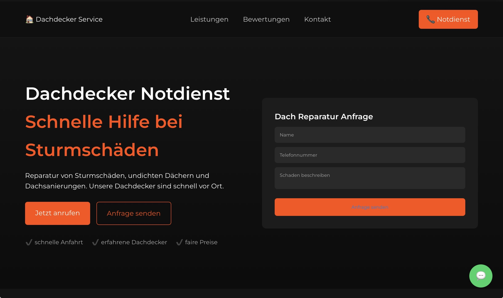
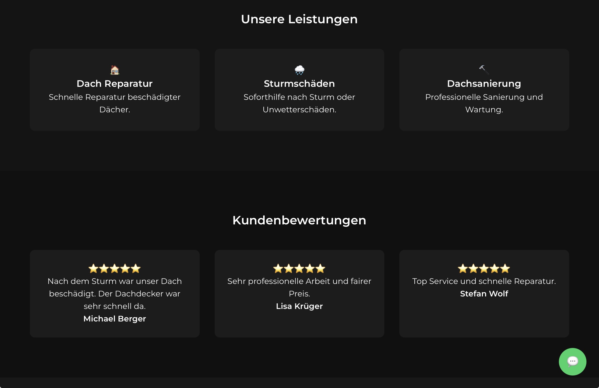

Website für Dachdeckerbetriebe
Professionelle Landingpage für Dachdecker und Handwerksbetriebe. Perfekt geeignet um neue Kunden über Google zu gewinnen.
Beispiel einer Dachdecker Website
So könnte eine moderne Website für einen Dachdeckerbetrieb aussehen.


Was eine Dachdecker Website enthalten kann
Alle wichtigen Funktionen für Handwerksbetriebe.
Telefon Button
Kunden können mit einem Klick direkt anrufen.
WhatsApp Kontakt
Schnelle Kundenanfragen über WhatsApp.
Kundenbewertungen
Vertrauen durch echte Bewertungen.
Google Maps Karte
Der Standort des Betriebs wird direkt angezeigt.
Wonach Ihre Kunden suchen
Ein Dach wird selten aus Spaß saniert. Kunden kommen mit einem Schaden oder einem größeren Vorhaben und wollen wissen, ob Sie zuverlässig sind.
Sturm- und Wasserschaden
Nach einem Unwetter steigen Suchen wie „Dachdecker Berlin Sturmschaden“ sprunghaft an. Wer dann schnell erreichbar ist und das auf der Website sagt, bekommt den Auftrag.
Dachsanierung
Eine Sanierung ist eine große Investition. Diese Kunden vergleichen mehrere Betriebe und lesen sich ein. Ausführliche Leistungsseiten und echte Projektfotos entscheiden.
Flachdach und Dachrinne
Gewerbekunden und Hausverwaltungen suchen gezielt nach Flachdachabdichtung oder Dachrinnenreinigung. Das sind planbare, wiederkehrende Aufträge.
Dachfenster und Dämmung
Wer den Dachboden ausbauen will, sucht nach Dachfenstern und Dämmung und fragt oft nach Förderung. Eine Seite, die diese Fragen beantwortet, bringt gut vorbereitete Anfragen.
Was eine Dachdecker-Website können muss
Vorher-nachher-Fotos
Nichts überzeugt beim Dach so sehr wie Bilder echter Projekte. Eine Galerie mit Vorher-nachher-Vergleichen ersetzt viele Worte.
Schadensmeldung mit Foto
Kunden schicken per WhatsApp ein Foto des Schadens. Sie sehen sofort, ob es eilt, und können besser planen.
Leistungsseiten
Steildach, Flachdach, Sanierung, Reparatur und Notdienst getrennt darstellen. So findet Google für jede Suche die passende Seite.
Bewertungen
Google-Bewertungen direkt einbinden. Bei Arbeiten in großer Höhe und mit hohen Kosten wollen Kunden wissen, was andere erlebt haben.
Häufige Fragen
Was kostet eine Website für einen Dachdeckerbetrieb?
Für die meisten Betriebe passt das Starter-Paket für 349 € (eine Landingpage) oder das Business-Paket für 1.999 € (komplette Seite mit Unterseiten je Leistung). Die Umsetzung dauert 3 bis 14 Tage.
Kann ich eigene Projektfotos verwenden?
Ja, unbedingt. Echte Fotos Ihrer Baustellen wirken deutlich stärker als Stockbilder. Wir bereiten sie für eine schnelle Ladezeit auf.
Lohnt sich eine eigene Seite für Sturmschäden?
Ja. Nach Unwettern suchen viele Menschen gleichzeitig nach Hilfe. Eine eigene Seite mit klarer Erreichbarkeit fängt genau diese Anfragen ab.
Wie schnell ist die Website online?
Je nach Umfang in 3 bis 14 Tagen.
Website für Dachdecker erstellen lassen
Wir erstellen moderne Websites für Handwerksbetriebe. Perfekt geeignet für Dachdecker, Handwerker und Bauunternehmen.
Diese Website eignet sich besonders für:
- Dachdeckerbetriebe
- Dachsanierungen
- Dach Notdienste
- Handwerksbetriebe